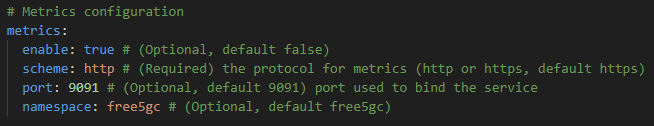
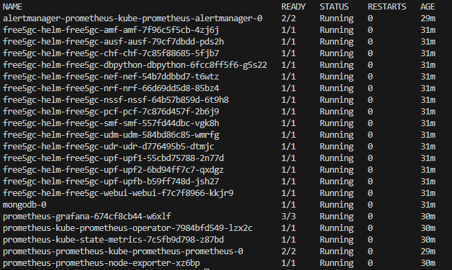
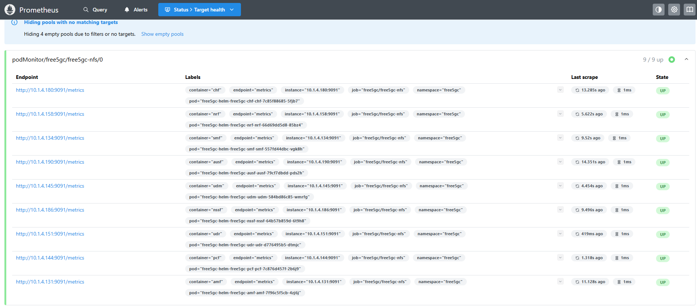
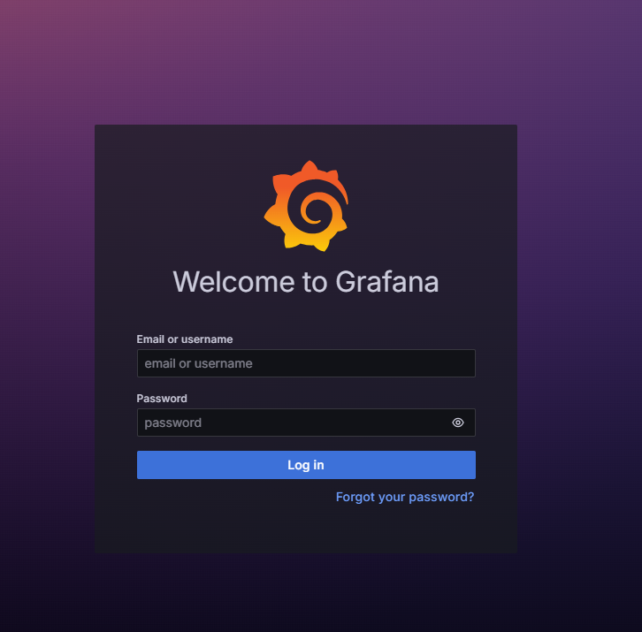
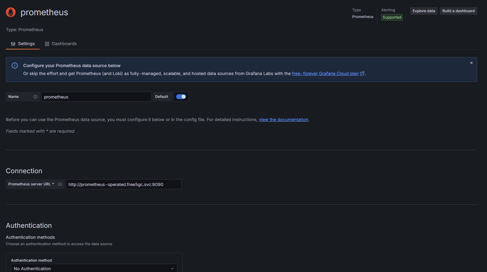
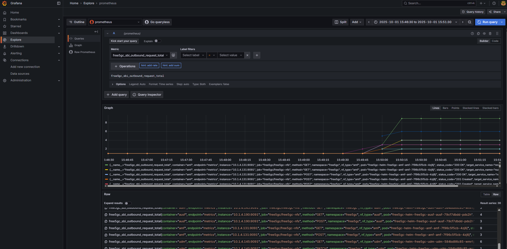

Visualizing 5G Core Metrics with Prometheus and Grafana on free5gc-helm
Note
Author: Guo-Cheng Wu
Date: 2025/10/03
The telecommunications landscape is undergoing a monumental shift, transitioning from monolithic, hardware-centric systems to a cloud-native paradigm. As projects like free5gc-helm demonstrate, the future of 5G lies in containerized microservices orchestrated on platforms like Kubernetes. This evolution brings incredible benefits in scalability, resilience, and portability, allowing network functions to be deployed and scaled with unprecedented agility.
However, this dynamic, distributed environment also introduces new challenges. With network functions running as dozens of pods across a cluster, how do we track their health? How do we measure performance, identify bottlenecks, or diagnose issues in real-time? The answer is observability. We need robust tools to collect, store, and visualize the vast amount of metrics these systems generate.
This is where the powerful open-source duo of Prometheus and Grafana comes in. Prometheus provides a scalable and reliable time-series database for collecting metrics, while Grafana offers a flexible and intuitive platform for visualizing them.
This blog post will serve as a comprehensive guide to integrating this monitoring stack with the free5gc-helm deployment. We will start by introducing the core concepts of Prometheus and Grafana, explaining their specific roles in monitoring a 5G core network, and finally, walk you through the exact steps to get everything up and running.
What is Prometheus?
Prometheus is an open-source monitoring and alerting toolkit originally created at SoundCloud in 2012. It has since been widely adopted and is now a graduated project of the Cloud Native Computing Foundation (CNCF). At its core, Prometheus stores monitoring data as time series, where each metric is recorded with a timestamp and optional labels for richer context. It offers a powerful query language (PromQL) for flexible analysis, collects data through an efficient pull model over HTTP, and supports both static configuration and service discovery for target detection.
Key Features
-
Multi-dimensional Data Model: Prometheus stores data as time series, where each series is identified by a metric name and a set of key-value pairs. This allows for powerful and flexible querying.
-
Service Discovery: Prometheus can be configured to automatically discover targets to monitor. In Kubernetes, it can dynamically find pods and services based on their labels and annotations, eliminating the need to manually configure every single microservice.
-
PromQL (Prometheus Query Language): A flexible and powerful functional query language designed specifically for time-series data. PromQL allows you to select, aggregate, and perform calculations on your metrics in real-time.
-
Alerting: Prometheus integrates with the Alertmanager component, which handles alerts and notifications based on defined rules, ensuring that operators are notified of issues before they impact users.
What is Grafana?
While Prometheus is excellent at collecting and storing data, its built-in graphing capabilities are basic and intended primarily for ad-hoc querying. To truly understand your data, you need a powerful visualization tool, and this is where Grafana shines.
Grafana is an open-source observability platform that connects to a wide range of data sources, with Prometheus being one of the most popular. It enables users to build, explore, and share interactive dashboards, offering a unified view of complex systems.
Key Features
-
Rich Visualizations: A wide variety of panels and plugins let you display metrics and logs in different formats — from time-series graphs and gauges to tables, and heatmaps.
-
Dynamic Dashboards: Build reusable dashboards with template variables, enabling teams to quickly filter, drill down, and compare data across different environments or time ranges.
-
Flexible Data Sources: Grafana is not tied to a single backend. You can mix queries from multiple data sources within the same dashboard, making it a powerful tool for heterogeneous systems.
-
Exploration Tools: Easily run ad-hoc queries, explore metrics side by side, or pivot from metrics to logs with preserved labels for faster troubleshooting.
-
Integrated Alerting: Define and manage alerts visually from your panels. Grafana continuously evaluates these rules and can send notifications to popular channels such as Slack, PagerDuty, or OpsGenie.
Prometheus and Grafana in the 5G Core Context
So, how do these tools apply specifically to a free5GC deployment? A 5G core is a complex system of interconnected NFs, each responsible for a critical part of the network's operation. To ensure reliability and performance, we need to monitor Key Performance Indicators (KPIs) from each of these NFs.
There are some metrics we can track in free5GC:
-
AMF:
- Number of active PDU sessions.
- Number of UEs that are connected to the core network.
- Number of UEs currently in the handover procedure.
-
Other NFs:
- The latency of requests sent to other NFs.
- The total number of outbound SBI requests sent by an NF.
A Practical Guide: Integrating with free5gc-helm
Starting from v4.2.0, free5GC includes support for Prometheus, which can be used with both free5gc-compose and free5gc-helm.
In the following example, we will demonstrate how to set up and integrate Prometheus and Grafana with free5GC using free5gc-helm.
Step 1: Deploy free5GC with free5gc-helm
You can follow our official guide to deploy free5gc-helm.
Before installing, you need to update the configuration file of the NF you want to monitor and enable metrics. For example, to enable metrics for AMF, you should modify the ~/free5gc-helm/charts/free5gc/charts/free5gc-amf/values.yaml, and set metrics.enable to true.

After installing free5gc-helm, verify that all pods are running:
kubectl get pods -n free5gc
Step 2: Deploy Prometheus and Grafana
Use the Prometheus Community Kubernetes Helm Charts to install Prometheus and Grafana.
helm repo add prometheus-community https://prometheus-community.github.io/helm-chartshelm repo updatehelm install prometheus prometheus-community/kube-prometheus-stack -n free5gc
After installation, confirm the pods are running:
kubectl get pods -n free5gc

Step 3: Deploy the PodMonitor to Link Prometheus and free5GC
This step links Prometheus with your free5GC pods. We provide a ready-to-use configuration file for a PodMonitor, which instructs the Prometheus Operator on how to discover and scrape metrics from the pods.
cd ~/free5gc-helm/charts/free5gckubectl apply -f prometheus.yamlNote: This example assumes free5GC is deployed in the
free5gcnamespace.
Step 4: Access Prometheus and Grafana
Once the PodMonitor is applied, the Prometheus Operator will automatically configure the Prometheus server to begin scraping your free5GC pods.
Access Prometheus
kubectl port-forward --address 0.0.0.0 prometheus-prometheus-kube-prometheus-prometheus-0 9090:9090 -n free5gc
Open your browser and confirm Prometheus is collecting metrics from each free5GC NF.

Access Grafana
First, check the Grafana pod name
kubectl get pods -n free5gc
Then, port-forward to access Grafana:
kubectl port-forward --address 0.0.0.0 <grafana_pod_name> 3000:3000 -n free5gc
You should see the login page of Grafana

Log in with the default credentials:
- Username: admin
- Password: prom-operator
Step 5: Add the Prometheus Data Source in Grafana
If the data source isn't automatically configured, you can add it manually.
- In Grafana, navigate to:
Home > Connections > Data sources > Add new data source. -
Select Prometheus and configure the Prometheus server URL as
http://prometheus-operated.monitoring.svc:9090.
 -
Click Save & Test. Once successful, you can start exploring your metrics.
Step 6: Explore free5GC Data in Grafana
Before building a dashboard, the best place to verify that Grafana is receiving data from Prometheus is the Explore view.
- In the Grafana side menu, click the Explore icon.
- At the top of the page, select the Prometheus data source from the dropdown menu.
- In the query editor's Metrics browser, you can type
free5gc_to see a list of all available metrics from your 5G core. - Select a metric to query, for example,
free5gc_sbi_outbound_request_total. - Click the Run query button in the top-right corner.
You should now see a graph displaying the real-time data for that metric, confirming that your observability pipeline is fully operational.

Building Your First Dashboard
Now that you've confirmed data is flowing, you can create dashboards to visualize it. A dashboard is a collection of panels, with each panel displaying the result of a specific query. Navigate to the Dashboards section and click Create dashboard to build your first visualization.
For your convenience, we have provided a starter dashboard that you can import directly. Simply copy the JSON model in Appendix and paste it into Grafana's import tool.
Conclusion
The transition to a cloud-native 5G architecture is not just about containerizing network functions; it's about embracing the rich ecosystem of tools that make these dynamic systems manageable. By integrating Prometheus and Grafana with the free5gc-helm project, you unlock a powerful observability stack, transforming raw operational data into actionable insights. You are no longer flying blind; you now have the instrumentation to measure, analyze, and optimize your 5G core network with confidence, ensuring a more resilient and performant service for the future.
reference
About me
Hi, I’m Guo-Cheng Wu, a newcomer to 5G and free5GC, and currently conducting research on Network Slicing. Let me know without hesitation if there is any mistake in the article.
Connect with Me
Github: https://github.com/leowu0407
Appendix
- Grafana JSON Model
{ "__inputs": [ { "name": "DS_PROMETHEUS", "label": "prometheus", "description": "", "type": "datasource", "pluginId": "prometheus", "pluginName": "Prometheus" } ], "__elements": {}, "__requires": [ { "type": "grafana", "id": "grafana", "name": "Grafana", "version": "12.1.1" }, { "type": "datasource", "id": "prometheus", "name": "Prometheus", "version": "1.0.0" }, { "type": "panel", "id": "stat", "name": "Stat", "version": "" }, { "type": "panel", "id": "timeseries", "name": "Time series", "version": "" } ], "annotations": { "list": [ { "builtIn": 1, "datasource": { "type": "grafana", "uid": "-- Grafana --" }, "enable": true, "hide": true, "iconColor": "rgba(0, 211, 255, 1)", "name": "Annotations & Alerts", "target": { "limit": 100, "matchAny": false, "tags": [], "type": "dashboard" }, "type": "dashboard" } ] }, "editable": true, "fiscalYearStartMonth": 0, "graphTooltip": 0, "id": null, "links": [], "panels": [ { "fieldConfig": { "defaults": { "mappings": [], "thresholds": { "mode": "absolute", "steps": [ { "color": "green", "value": 0 }, { "color": "red", "value": 80 } ] } }, "overrides": [] }, "gridPos": { "h": 8, "w": 12, "x": 0, "y": 0 }, "id": 1, "options": { "colorMode": "value", "graphMode": "area", "justifyMode": "auto", "orientation": "auto", "percentChangeColorMode": "standard", "reduceOptions": { "calcs": [ "lastNotNull" ], "fields": "", "values": false }, "showPercentChange": false, "textMode": "auto", "wideLayout": true }, "pluginVersion": "12.1.1", "targets": [ { "datasource": { "type": "prometheus", "uid": "${DS_PROMETHEUS}" }, "editorMode": "builder", "expr": "sum(clamp_min(free5gc_amf_business_ue_connectivity{instance=~\"$instance\"}, 0))", "legendFormat": "__auto", "range": true, "refId": "A" } ], "title": "Connected UEs", "type": "stat" }, { "fieldConfig": { "defaults": { "mappings": [], "thresholds": { "mode": "absolute", "steps": [ { "color": "green", "value": 0 }, { "color": "red", "value": 80 } ] } }, "overrides": [] }, "gridPos": { "h": 8, "w": 12, "x": 12, "y": 0 }, "id": 2, "options": { "colorMode": "value", "graphMode": "area", "justifyMode": "auto", "orientation": "auto", "percentChangeColorMode": "standard", "reduceOptions": { "calcs": [ "lastNotNull" ], "fields": "", "values": false }, "showPercentChange": false, "textMode": "auto", "wideLayout": true }, "pluginVersion": "12.1.1", "targets": [ { "datasource": { "type": "prometheus", "uid": "${DS_PROMETHEUS}" }, "editorMode": "builder", "expr": "sum(free5gc_amf_business_active_pdu_session_current_count{instance=~\"$instance\"})", "legendFormat": "__auto", "range": true, "refId": "A" } ], "title": "Active PDU Sessions", "type": "stat" }, { "fieldConfig": { "defaults": { "color": { "mode": "palette-classic" }, "custom": { "axisBorderShow": false, "axisCenteredZero": false, "axisColorMode": "text", "axisLabel": "", "axisPlacement": "auto", "barAlignment": 0, "barWidthFactor": 0.6, "drawStyle": "line", "fillOpacity": 10, "gradientMode": "opacity", "hideFrom": { "legend": false, "tooltip": false, "viz": false }, "insertNulls": false, "lineInterpolation": "linear", "lineWidth": 1, "pointSize": 5, "scaleDistribution": { "type": "linear" }, "showPoints": "auto", "spanNulls": false, "stacking": { "group": "A", "mode": "none" }, "thresholdsStyle": { "mode": "off" } }, "mappings": [], "thresholds": { "mode": "absolute", "steps": [ { "color": "green", "value": 0 }, { "color": "red", "value": 80 } ] } }, "overrides": [] }, "gridPos": { "h": 16, "w": 24, "x": 0, "y": 8 }, "id": 4, "options": { "legend": { "calcs": [], "displayMode": "list", "placement": "bottom", "showLegend": true }, "tooltip": { "hideZeros": false, "mode": "multi", "sort": "none" } }, "pluginVersion": "12.1.1", "targets": [ { "datasource": { "type": "prometheus", "uid": "${DS_PROMETHEUS}" }, "editorMode": "builder", "expr": "sum by (nf_type) (rate(free5gc_sbi_outbound_request_total{nf_type=~\"$nf_type\", instance=~\"$instance\"}[1m]))", "legendFormat": "{{nf_type}}", "range": true, "refId": "A" } ], "title": "SBI Outbound Request Rate (1m avg)", "type": "timeseries" }, { "fieldConfig": { "defaults": { "color": { "mode": "palette-classic" }, "custom": { "axisBorderShow": false, "axisCenteredZero": false, "axisColorMode": "text", "axisLabel": "", "axisPlacement": "auto", "barAlignment": 0, "barWidthFactor": 0.6, "drawStyle": "line", "fillOpacity": 10, "gradientMode": "opacity", "hideFrom": { "legend": false, "tooltip": false, "viz": false }, "insertNulls": false, "lineInterpolation": "linear", "lineWidth": 1, "pointSize": 5, "scaleDistribution": { "type": "linear" }, "showPoints": "auto", "spanNulls": false, "stacking": { "group": "A", "mode": "none" }, "thresholdsStyle": { "mode": "off" } }, "mappings": [], "thresholds": { "mode": "absolute", "steps": [ { "color": "green", "value": 0 }, { "color": "red", "value": 80 } ] }, "unit": "s" }, "overrides": [] }, "gridPos": { "h": 16, "w": 24, "x": 0, "y": 24 }, "id": 5, "options": { "legend": { "calcs": [], "displayMode": "list", "placement": "bottom", "showLegend": true }, "tooltip": { "hideZeros": false, "mode": "multi", "sort": "none" } }, "pluginVersion": "12.1.1", "targets": [ { "datasource": { "type": "prometheus", "uid": "${DS_PROMETHEUS}" }, "editorMode": "builder", "expr": "(sum by (nf_type, target_service_name) (rate(free5gc_sbi_outbound_request_duration_seconds_sum{nf_type=~\"$nf_type\", instance=~\"$instance\"}[1m])) / sum by (nf_type, target_service_name) (rate(free5gc_sbi_outbound_request_duration_seconds_count{nf_type=~\"$nf_type\", instance=~\"$instance\"}[1m])))", "legendFormat": "{{nf_type}} to {{target_service_name}}", "range": true, "refId": "A" } ], "title": "Average SBI Request Latency (1m avg)", "type": "timeseries" } ], "refresh": "5s", "schemaVersion": 41, "tags": [], "templating": { "list": [ { "current": {}, "datasource": { "type": "prometheus", "uid": "${DS_PROMETHEUS}" }, "definition": "label_values(free5gc_sbi_outbound_request_total, nf_type)", "includeAll": true, "multi": true, "name": "nf_type", "options": [], "query": { "query": "label_values(free5gc_sbi_outbound_request_total, nf_type)", "refId": "StandardVariableQuery" }, "refresh": 1, "regex": "", "type": "query" }, { "current": {}, "datasource": { "type": "prometheus", "uid": "${DS_PROMETHEUS}" }, "definition": "label_values(up, instance)", "includeAll": true, "multi": true, "name": "instance", "options": [], "query": { "query": "label_values(up, instance)", "refId": "StandardVariableQuery" }, "refresh": 1, "regex": "", "type": "query" } ] }, "time": { "from": "now-5m", "to": "now" }, "timepicker": {}, "timezone": "", "title": "free5GC - Core Network Overview", "uid": "68300355-86a7-4e3f-b15f-5f5a89160a6f", "version": 16, "weekStart": "" }